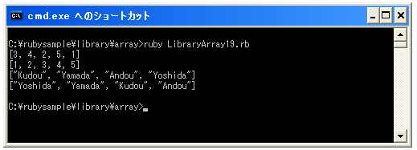

- Home ›
- Ruby入門 ›
- 配列(Array)クラス
配列内の要素をソートする
配列に格納されている各要素を一定の規則でソートする方法を確認します。Arrayクラスで用意されている「sort」メソッドを使います。
Arrayオブジェクト.sort
「sort」メソッドは配列に格納されている要素を一定の規則でソートした新しい配列を返します。
ソートは比較方式を指定しない場合には各要素を「<=>」メソッドで要素と要素を比較します。この場合、要素は小さい順番に並べ替えられます。
具体的には次のように記述します。
ary = [4, 2, 5, 1, 3] newary = ary.sort
この場合次のような新しい配列を取得します。
[1, 2, 3, 4, 5]
また「sort」メソッドには「sort!」メソッドも用意されています。
Arrayオブジェクト.sort!
「sort!」メソッドの場合には新しい配列を返すのではなく、対象の配列自身をソートした配列に変更します。
ソートの方法を指定する
デフォルトでは各要素を「<=>」メソッドを使って比較していますが「sort」メソッドの後にブロックを記述してソートの方法を指定することが出来ます。
Arrayオブジェクト.sort {|a, b| ... }
ブロック内で比較する2つの要素をそれぞれ「a」と「b」を使ってどのように比較するかを記述します。デフォルトと同じ比較方式にするには次のように記述します。
ary = [4, 2, 5, 1, 3]
newary = ary.sort {|a, b| a <=> b }
「self <=> other」メソッドの場合はselfとotherを比較して、selfが大きい時に正、等しい時に0、小さい時に負の整数を返します。そこで降順に並べるように記述してみます。
ary = [4, 2, 5, 1, 3]
newary = ary.sort {|a, b| (-1) * (a <=> b) }
※正直このように書くのがいいのか分からないのですが一応サンプルとして書いておきます。
この場合は各要素を比較して降順に並べ替えられた新しい配列を取得できます。
またブロックを記述する場合にも「sort!」メソッドも用意されています。
Arrayオブジェクト.sort! {|a, b| ... }
「sort!」メソッドの場合には新しい配列を返すのではなく、対象の配列自身をブロック内で指定した比較方法でソートした配列に変更します。
サンプルプログラム
実際に試してみます。
#! ruby -Ks
ary = [3, 4, 2, 5, 1]
p ary
newary = ary.sort
p newary
ary = %w[Kudou Yamada Andou Yoshida]
p ary
newary = ary.sort{|a,b| (-1)*(a <=> b)}
p newary
実行結果は次のようになります。

( Written by Tatsuo Ikura )

著者 / TATSUO IKURA
初心者～中級者の方を対象としたプログラミング方法や開発環境の構築の解説を行うサイトの運営を行っています。